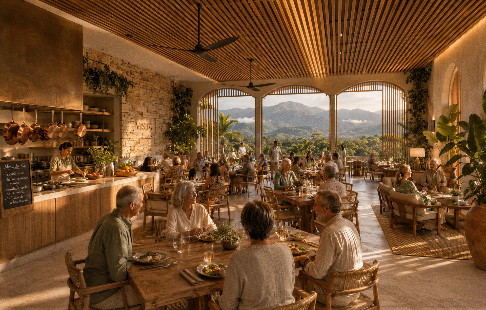

01
Vista de las
Vista de las
Amapolas
Comunidad residencial · Villa Altagracia · En obra
Una comunidad residencial pensada para quienes cruzaron los 55 con todo por vivir: vivienda, salud, comunidad y entorno en un solo lugar, a media hora de Santo Domingo. Fideicomiso constituido con Fiduciaria La Nacional y obra iniciada.
- UbicaciónVilla Altagracia · 30 min de Santo Domingo
- EstructuraFideicomiso inmobiliario · obra iniciada
- ProgramaApartamentos + plaza comercial · 3 etapas